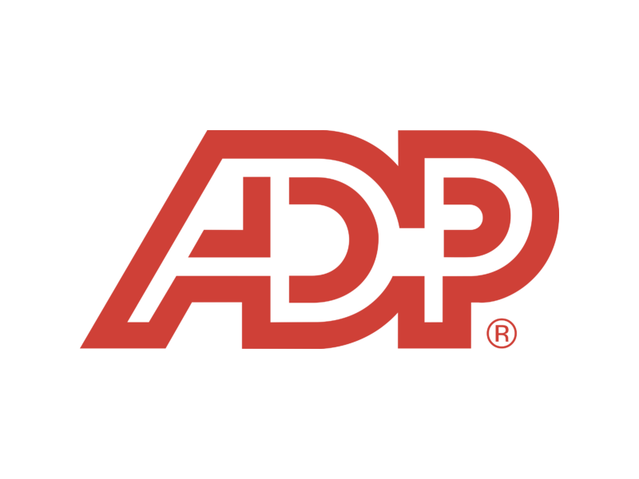

The Nth Power provides enterprise performance management consulting for organizations running Oracle Hyperion, Oracle Cloud EPM, and hybrid environments. Senior practitioners only, from scoping through stabilization.
Most organizations we work with have already been through one or two consulting firms. They come to us when they need the engagement done right.
Two decades of Oracle EPM delivery across the most complex financial reporting environments in the world.
Senior consultants from day one. No bait-and-switch staffing. Named resources who stay on the engagement.
Clients come back because the work holds up. Systems built for long-term performance, not temporary workarounds.

"You don't know how much time and money was wasted with other consultants. You are the best!"

"The Nth Power has done more for our project in their first two weeks than all other consultants and vendors in the last two years combined."

"The best consultants I have ever worked with."
A 30-minute call to understand your environment, your challenges, and your timeline. No sales deck.
We review your landscape and deliver a written assessment with a fixed-scope proposal. You keep the assessment either way.
Senior consultants execute against the plan with weekly checkpoints, controlled milestones, and no surprises.
Tell us about your environment. We'll come back within one business day to schedule a 30-minute consultation, and you'll get a written assessment afterward.